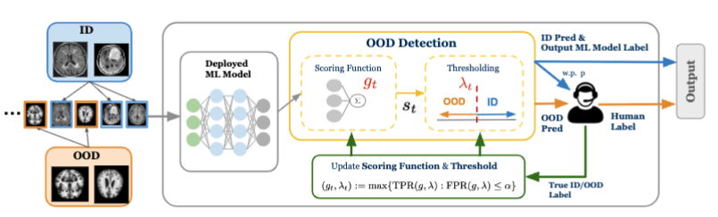

About Me
I'm a third-year PhD student in Computer Science at the University of Wisconsin-Madison, working with Professor Vikas Singh. I graduated from Carleton College in 2023 with degrees in Mathematics and Computer Science. I also studied abroad at DIS Copenhagen and Budapest Semesters in Mathematics.
My research is in machine learning and aims to develop mathematical foundations for building more efficient and reliable AI systems. I'm interested in understanding the compositional structure of neural networks and ensuring they behave predictably in real-world settings.
I'm originally from Japan. Outside of research, I recently started learning piano and am enjoying the learning process.
Research Projects
Composing Linear Layers from Irreducibles

We introduce a Clifford algebra-based decomposition of linear layers into geometric primitives with a differentiable algorithm. Applied to LLM attention projections, the method reduces parameter counts from O(d²) to O(log²d) while maintaining baseline accuracy and perplexity.
Adaptive Scoring and Thresholding with Human Feedback for Robust OOD Detection
We develop a mathematically grounded OOD framework for adaptively updating scoring functions and thresholds with human feedback while maintaining false positive control. The framework provides mechanisms for adapting to OOD inputs under dynamic conditions.
Is Conformal Factuality Robust to Distractors?
We investigate the robustness of conformal prediction-based guarantees for LLM factuality under realistic distribution shifts. We demonstrate that these guarantees can break down in the presence of distractors, highlighting reliability challenges in AI systems.
Image-Adaptive Generative Adversarial Networks
We replicate Image-Adaptive GANs for image reconstruction tasks and build generative models capable of accurately estimating compressed or degraded images with high confidence. We analyze the model performances against images with different facial features to identify biases. This project was done as part of my undergraduate thesis at Carleton.
Selecting Balls From Urns With Partial Replacement Rules
We investigate the "preferential" distribution X(0,1) in combinatorial probability. We explore open questions regarding the distribution including density, expectation, and variance properties.
Contact & Links
Feel free to reach out - I'm always happy to chat about research or potential collaborations!